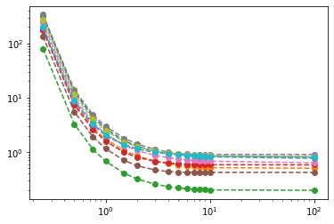

(Dis)similarity metrics¶
Introduction¶
Lacking response and class information, most unsupervised algorithms search for patterns based on how alike or different are observations with respect to each other. One consequence of this is that the outcome of these algorithms will depend on what we mean by two observations being alike or similar. In this lesson, we’ll review several measures of proximity, quantifying either similarity or dissimilarity between pair of observations, or sets of observations. Most of the present material was adapted from references [1].
What is a proximity measure?¶
There are actually very few requirements for a valid proximity measure. The most important property is that the magnitude of the measure must reflect in some sense whether two observations are close or far apart. When quantifying similarity, the measure must be larger the more each pair of observations resemble each other, while when quantifying dissimilarity, the inverse would be true. A dissimilarity measure thus acts much as a distance between observations (though in strict a distance must satisfy additional constraints, such as the triangle inequality).
Dissimilarity measures¶
Let \(d(\vec{x},\vec{y})\) be the dissimilarity between two observations \(\vec{x}\) and \(\vec{y}\). Then, for \(d(\vec{x},\vec{y})\) to be a valid dissimilarity measure the following properties must hold:
\(d(\vec{x},\vec{y})\) is a function \(d:X\times X \rightarrow \mathbb{R}\) such that \(-\infty < d_0 \leq d(\vec{x},\vec{y}) < \infty\), where \(d_0\) is the minimum possible value for \(d(\vec{x},\vec{y})\).
\(d(\vec{x},\vec{x}) = d_0\)
It is a symmetric function, \(d(\vec{x},\vec{y}) = d(\vec{y},\vec{x})\). Actually, this last property does not hold for some functions used in practice, with some consequences, the most obvious being that the dissimilarity matrix is not symmetric.
The measure \(d(\vec{x},\vec{y})\) is also a metric is the following properties also hold:
\(d(\vec{x},\vec{y}) = d_0\) if and only if \(\vec{x} = \vec{y}\)
The triangle inequality: \(d(\vec{x},\vec{z}) \leq d(\vec{x},\vec{y}) + d(\vec{y},\vec{z})\). The most famous metric is the euclidean distance, or \(L_2\)-norm.
Similarity measures¶
Let \(s(\vec{x},\vec{y})\) be the dissimilarity between two observations \(\vec{x}\) and \(\vec{y}\). Then, for \(s(\vec{x},\vec{y})\) to be a valid dissimilarity measure the following properties must hold:
\(s(\vec{x},\vec{y})\) is a function \(s:X\times X \rightarrow \mathbb{R}\) such that \(-\infty < s(\vec{x},\vec{y}) \leq s_0 < \infty\), where \(s_0\) is the maximum possible value for \(s(\vec{x},\vec{y})\).
\(s(\vec{x},\vec{x}) = s_0\)
It is a symmetric function, \(s(\vec{x},\vec{y}) = s(\vec{y},\vec{x})\).
The measure \(s(\vec{x},\vec{y})\) is also a metric is the following properties also hold:
\(s(\vec{x},\vec{y}) = s_0\) if and only if \(\vec{x} = \vec{y}\)
\(s(\vec{x},\vec{y})s(\vec{y},\vec{z}) \leq \left [ s(\vec{x},\vec{y}) + s(\vec{y},\vec{z}) \right ]s(\vec{x},\vec{z})\).
Transforming between similarity and dissimilarity¶
It is relatively simple to transform from a similarity metric to a dissimilarity one, and vice-versa, or to build new metrics by transformation. It can be shown that the following transformations result in a valid metric:
\(s = \frac{a}{d}\), with \(a>0\).
\(s = d_{max} - d\)
\(d' = -\ln(d_{max} + k - d)\) for \(d(\vec{x},\vec{y})>0\) and \(k>0\).
\(d' = \frac{kd}{1+d}\) for \(d(\vec{x},\vec{y})>0\) and \(k>0\).
\(s' = \frac{1}{1-s}\) for \(s < 1\).
The dissimilarity (similarity) matrix¶
We have previously defined the data matrix \(X\) as an \(N\times D\) matrix, where \(N\) is the number of observations and \(D\) is the number of features or dimensions. The (dis)similarity matrix (or distance matrix) (\(D\)) \(S\) is a \(N\times N\) matrix where each entry (\(D_{ij}\)) \(S_{ij}\) is the (dis)similarity between observations \(\vec{x}_i\) and \(vec{x}_j\), (\(d(\vec{x}_i,\vec{x}_j)\)) \(s(\vec{x}_i,\vec{x}_j)\).
We can define a general purpose function that accepts a proximity measure, and returns a (dis)similarity matrix:
import numpy as np
from itertools import product
def proximity_matrix(X, measure='euclidian', **kwargs):
if measure == 'euclidian':
" This is fast for euclidian distance."
D = np.sqrt(np.sum(
(X[:, np.newaxis, :] - X[np.newaxis, :, :]) ** 2,
axis = -1))
else:
" Revert to slower loop for unknown function."
N = len(X)
D = np.zeros((N,N))
for i, j in product(range(N), repeat=2):
D[i,j] = measure(X[i], X[j], **kwargs)
return D
We can test our function with some sample numerical data, let’s use the Iris data set again. Remember, the data set consists of 150 observations with 4 features.
import matplotlib.pyplot as plt
from sklearn.datasets import load_iris
import numpy as np
dataset = load_iris()
X = dataset['data']
y = dataset['target']
fig, ax = plt.subplots(1, 2, figsize=(12,6))
ax[0].scatter(X[:,0], X[:,1], c=y)
ax[0].set_ylabel('Sepal width (cm)')
ax[0].set_xlabel('Sepal length (cm)')
ax[1].scatter(X[:,2], X[:,3], c=y)
ax[1].set_ylabel('Petal width (cm)')
ax[1].set_xlabel('Petal length (cm)');

And find the distance matrix, to avoid printing the whole matrix, let’s visualize the distance matrix using a heat map while defining a helper function for future use. To further explore the effect of each measure, we also project the distance matrix into a the “best” 2D representation using a technique called multidimensional scaling (MDS). MDS searches the best projection that preserves the original distances. We will study MDS in detail further into the course.
from sklearn.manifold import MDS
D = proximity_matrix(X)
def plot_prox(D, mds=True):
if mds:
fig, (ax1, ax2, ax3) = plt.subplots(figsize=(24, 8), ncols=3)
# MDS projection
mds = MDS(n_components=2, dissimilarity='precomputed', random_state=0)
fdata = mds.fit_transform(D)
ax3.scatter(fdata[:, 0], fdata[:, 1], c=y, s=100)
else:
fig, (ax1, ax2) = plt.subplots(figsize=(16, 8), ncols=2)
# Heat map
pos = ax1.imshow(D)
fig.colorbar(pos, ax=ax1)
# Hitogram
ax2.hist(np.ravel(D), bins=15)
plot_prox(D, mds=True)

TODO: Make visualization interactive, such that selecting a pair in the heatmap, it colors such pair in the scatterplot, and displays the metric. Alternatively, select a pair of points in the scatter and display the metric.
Dissimilarity measures for numerical data¶
Weighted \(l_{p}\)-norm, Minkowski Distance¶
The weighted \(l_p\)-norm is the most common dissimilarity measure. It is defines as
where \(x_i\) and \(y_i\) are the ith feature of observation \(\vec{x}\) and \(\vec{y}\), and \(w_i>0\) is the weight coefficient. For \(w_i = 1\) we get the unweighted \(l_p\)-norm. The value of \(p\) controls the relative importance of large to small absolute differences \(\left | x_i - y_i \right|\). The relative importance of large differences grows with the value of \(p\).
The Mikowski distance is not scale invariant, so its usual to standardize the data before using this metric. It satisfies the triangle inequality, so it is a metric.
The most common \(p\) values are \(p=1, 2, \infty\), discussed below. The \(l_1\) and \(l_\infty\) norms may be viewed as overestimation and underestimation of the \(l_2\) norm, since \(d_{\infty}\leq d_2 \leq d_1\).
We now implement the general Minkowski distance within our original function. A similar implementation to that of the Euclidean distance would still be possible, but adjusting for an arbitrary exponent \(p\). Here we instead define the distance function to further explore its properties.
def minkowski_d(x, y, **kwargs):
#x = np.asarray(x)
#y = np.asarray(y)
if 'p' not in kwargs:
print("Missing required parameter p")
p = kwargs['p']
return np.sum(np.abs(x - y)**p)**(1/p)
It is interesting to study how the distance changes with \(p\). Next, we consider 10 different distance from vectors of dimension 5 sampled from the \(U(0,1)\) distribution, an plot the Minkowsky distance vs \(p\)
p_list = [1/4, 1/2, 3/4, 1, 1.5, 2, 3, 4, 5, 6, 7, 8, 9, 10, 100]
for i in range(10):
x1 = np.random.rand(5)
y1 = np.random.rand(5)
d_list = [minkowski_d(x1, y1, p=p) for p in p_list]
plt.loglog(p_list, d_list, 'o--')

In general the distance decreases with \(p\) as we now show. We need to prove that \(|\vec{x}|_{p} \geq |\vec{x}|_{p+1}\). For \(\vec{x} = 0\) the equality holds. For \(\vec{x} \neq 0\), let \(y_i = |x_i|/|\vec{x}|_{p+1}\leq 1\). Then,
From the last inequality
thus, proving the asseveration.

\(l_1\), Manhattan distance
The \(l_1\) normal, also called the Manhattan distance, or the city-block distance, is defined as
\[ d_1(\vec{x},\vec{y}) = \sum_{i=1}^D \left | x_i - y_i \right | \right \]It’s called the city block distance, since it sums the absolute difference of each component, akin to summing the orthogonal distances transversed when moving on a squared road network. It is preferred over the \(l_2\) norm when outliers are present.

D = proximity_matrix(X, measure=minkowski_d, p=1) plot_prox(D, mds=True)

One possible weighted transformation for the Manhattan distance, which greatly exaggerates large distances, is
\[ d_G(\vec{x},\vec{y}) = -log_{10}\left( 1 - \frac{1}{D}\sum_{i=1}^D \frac{|x_i - y_i|}{b_i - a_i} \right) \]where \(b_i\) and \(a_i\) are the maximum and minimum values among the ith features of N vectors of X, respectively.
Since \(d_G\) depends on the whole set X, through \(a\) and \(b\), we need to pass those vectors explicitly.
def d_g(x, y, **kwargs): a = kwargs['a'] b = kwargs['b'] return -np.log10(1 - np.sum(np.abs(x - y)/(b - a))/len(x)) a = np.min(X, axis=0) b = np.max(X, axis=0) D = proximity_matrix(X, d_g, a=a, b=b) plot_prox(D, mds=True)

\(l_2\), Euclidean distance
\[ d_2(\vec{x},\vec{y}) = \sqrt{\left ( \sum_{i=1}^D \left (x_i - y_i \right )^2 \right )} \]We have already implemented the \(l_2\) norm as the euclidean distance before. We can verify the output of the Minkowsky distance with \(p=2\) is the same.
This is probably the most common distance metric, and many learning algorithms are design to work with Euclidean distance, such a KNN and K-means.
D = proximity_matrix(X, measure=minkowski_d, p=2) plot_prox(D, mds=True)
\(l_\infty\), Chebyshev distance
In the limit \(p \rightarrow \infty\) the Minkowski distance becomes the Chebyshev distance, i.e., the maximum difference, component-wise.
\[ d_\infty(\vec{x},\vec{y}) = \underset{1\leq i \leq D}{\operatorname{max}} \left | x_i - y_i \right | \]
The Chebyshev distance between two spaces on a chess board gives the minimum number of moves a king requires to move between them. This is because a king can move diagonally, so that the jumps to cover the smaller distance parallel to a rank or column is effectively absorbed into the jumps covering the larger. Above are the Chebyshev distances of each square from the square f6. Source: https://en.wikipedia.org/wiki/Chebyshev_distance
``` python
def chebyshev_d(x, y):
return np.max(np.abs(x - y))
```
``` python
D = proximity_matrix(X, measure=chebyshev_d)
plot_prox(D, mds=True)
```

### Canberra distance
Text from {cite}`web:canberra`.
The Canberra distance is a metric function often used for data scattered around an origin. It was introduced in 1966 (Lance & Williams 1966) and is today mainly used in the form of 1967 (Lance & Williams 1967).
The Canberra metric is similar to the Manhattan distance (which itself is a special form of the Minkowski distance). The distinction is that the absolute difference between the variables of the two objects is divided by the sum of the absolute variable values prior to summing. The generalised equation is given in the form:
$$
d_C(\vec{x},\vec{y}) = \sum_{i=1}^D \frac{|x_i - y_i|}{|x_i| + |y_i|}
$$
This metric has the property that the result becomes unity when the variables are of opposite sign. It is useful in the special case where signs represent differences in kind rather than in degree. Anyhow, it is mainly used for values \> 0. This metric is easily biased for measures around the origin and very sensitive for values close to 0, where it is more sensitive to proportional than to absolute differences. This feature becomes more apparent in higher dimensional space, respectively an increasing number of variables. It is in turn less influenced than the Manhattan distance by variables with high values. As a very sensitive measurement it is applicable to identify deviations from normal readings.
``` python
def canberra_d(x, y):
return np.sum(np.abs(x - y)/(np.abs(x) + np.abs(y)))
D = proximity_matrix(X, measure=canberra_d)
plot_prox(D, mds=True)

A metric that shares some properties wit the Canberra distance is
def d_q(x, y):
return np.sqrt(np.sum(((x - y)/(x + y))**2)/len(X))
D = proximity_matrix(X, measure=d_q)
plot_prox(D, mds=True)

Yet, another similar metric is the Bray-Curtis distance. The Bray-Curtis distance is in the range [0, 1] if all coordinates are positive, and is undefined if the inputs are of length zero.
def bc_d(x, y):
return np.sum(np.abs(x - y))/np.sum(np.abs(x + y))
D = proximity_matrix(X, measure=bc_d)
plot_prox(D, mds=True)

Mahalanobis distance¶
A generalization of the \(l_2\) norm is
where \(B\) is a symmetric, positive definite matrix.
For the special case where \(B\) is the inverse of the covariance matrix, we obtain the Mahalanobis distance
The Mahalanobis distance projects the standard euclidean distance onto the principal axes, then scales each component by the variance along those axes. Think of it as a generalization of the uni-variate standardization \((x - y)\sigma\).
Consider the diagonalization of the \(D\times D\) covariance matrix \(\Sigma = (X-\mu)^T (X-\mu)/(N-1)\), \(\Sigma = U \Lambda U^T\). Here \(U\) is the matrix of column eigenvector, where each column a eigenvector pointing in the directions of the principal components, and \(\Lambda\) is a diagonal matrix with the variances along the principal axes in the diagonal.
A single centered observation is rotated by \(\vec{x}' = U^T \vec{x}\). So to project the difference vector \(\vec{\delta}\) onto the principal components we do \(\vec{\delta}' = U^T (\vec{x} - \vec{y})\).
Now, in the new space, features are uncorrelated, so we can standardize each component dividing by the standard deviation along each axis, \(\delta'_i/s_i\). Calculating the squared euclidean distance with the scaled components is equivalent to the following matrix operation
With the rotations made explicit
which makes the equivalence explicit.
You will implement the Mahalanobis distance in the assignment, as a function called mahalanobis_d.

Similarity measures for numerical data¶
Cosine similarity¶
Some text from [2].
Cosine similarity is a similarity metric based on the inner product of two vectors. It takes its name from the geometrical interpretation of the inner product, which gives the cosine of the angle between two vectors as
It is useful when the relative proportions among coordinates is important, while ignoring their absolute magnitude. This measure is invariant under rotations, but not to linear transformations, since general transformations do not preserve angles. It is also the same as the inner product of the same vectors normalized to both have length 1.
The cosine similarity is particularly used in positive space, where the outcome is neatly bounded in [0,1], and it’s most commonly used in high-dimensional positive spaces.
For example, in information retrieval and text mining, each term is notionally assigned a different dimension and a document is characterised by a vector where the value in each dimension corresponds to the number of times the term appears in the document. Cosine similarity then gives a useful measure of how similar two documents are likely to be in terms of their subject matter. For text matching, the attribute vectors A and B are usually the term frequency vectors of the documents. Cosine similarity can be seen as a method of normalizing document length during comparison.
The technique is also used to measure cohesion within clusters in the field of data mining.
One advantage of cosine similarity is its low-complexity, especially for sparse vectors: only the non-zero dimensions need to be considered.
A related distance measure is the cosine distance, defined for positive spaces
def cosine_s(x, y):
x_n = np.linalg.norm(x)
y_n = np.linalg.norm(y)
cs = np.dot(x,y) / (x_n * y_n)
# Clip values which outside domain due to rounding errors.
cs = np.clip(cs, -1, 1)
return cs
def cosine_d(x, y):
return 1 - cosine_s(x, y)
D = proximity_matrix(X, measure=cosine_d)
plot_prox(D, mds=True)

It is important to note, however, that this is not a proper distance metric as it does not have the triangle inequality property. To repair the triangle inequality property while maintaining the same ordering, it is necessary to convert to angular distance.
When the vector elements may be positive or negative:
Or, if the vector elements are always positive:
The advantage of the angular similarity coefficient is that, when used as a difference coefficient (by subtracting it from 1) the resulting function is a proper distance metric, which is not the case for the first meaning. However, for most uses this is not an important property. For any use where only the relative ordering of similarity or distance within a set of vectors is important, then which function is used is immaterial as the resulting order will be unaffected by the choice.
def angular_d(x, y):
return np.arccos(cosine_s(x, y)) / np.pi
D = proximity_matrix(X, measure=angular_d)
plot_prox(D, mds=True)

\(l_2\)-normalized Euclidean distance
Another effective proxy for Cosine Distance can be obtained by \(l_2\) normalisation of the vectors, followed by the application of normal Euclidean distance. Using this technique each term in each vector is first divided by the magnitude of the vector, yielding a vector of unit length, which lies on the unit circle. Then, it is clear, the Euclidean distance over the end-points of any two vectors is a proper metric which gives the same ordering as the Cosine distance for any comparison of vectors (imagine drawing lines between vector points on the unit circle), and furthermore avoids the potentially expensive trigonometric operations required to yield a proper metric. Once the normalization has occurred, the vector space can be used with the full range of techniques available to any Euclidean space, notably standard dimensionality reduction techniques. This normalized form distance is notably used within many Deep Learning algorithms.
def d2_normlzd(x, y): x = x/np.linalg.norm(x) y = y/np.linalg.norm(y) return np.sqrt(np.sum((x - y)**2)) D = proximity_matrix(X, measure=d2_normlzd) plot_prox(D, mds=True)

Pearson’s correlation coefficient¶
The correlation coefficient is equivalent to a centered cosine similarity.
Tanimoto measure¶
Based on weighted \(l_2\) norm¶
Dissimilarity measures for categorical data¶
Before introducing proximity measures for categorical data, we need an appropriate example data set with categorical variables. We will use the mushroom data set from UCI Machine Learning repository.
From the official description: This data set includes descriptions of hypothetical samples corresponding to 23 species of gilled mushrooms in the Agaricus and Lepiota Family (pp. 500-525). Each species is identified as definitely edible, definitely poisonous, or of unknown edibility and not recommended. This latter class was combined with the poisonous one. The Guide clearly states that there is no simple rule for determining the edibility of a mushroom; no rule like ``leaflets three, let it be’’ for Poisonous Oak and Ivy.
The attributes of the data set are, with their respective possible classes:
cap-shape: bell=b,conical=c,convex=x,flat=f, knobbed=k,sunken=s
cap-surface: fibrous=f,grooves=g,scaly=y,smooth=s
cap-color: brown=n,buff=b,cinnamon=c,gray=g,green=r, pink=p,purple=u,red=e,white=w,yellow=y
bruises?: bruises=t,no=f
odor: almond=a,anise=l,creosote=c,fishy=y,foul=f, musty=m,none=n,pungent=p,spicy=s
gill-attachment: attached=a,descending=d,free=f,notched=n
gill-spacing: close=c,crowded=w,distant=d
gill-size: broad=b,narrow=n
gill-color: black=k,brown=n,buff=b,chocolate=h,gray=g, green=r,orange=o,pink=p,purple=u,red=e, white=w,yellow=y
stalk-shape: enlarging=e,tapering=t
stalk-root: bulbous=b,club=c,cup=u,equal=e, rhizomorphs=z,rooted=r,missing=?
stalk-surface-above-ring: fibrous=f,scaly=y,silky=k,smooth=s
stalk-surface-below-ring: fibrous=f,scaly=y,silky=k,smooth=s
stalk-color-above-ring: brown=n,buff=b,cinnamon=c,gray=g,orange=o, pink=p,red=e,white=w,yellow=y
stalk-color-below-ring: brown=n,buff=b,cinnamon=c,gray=g,orange=o, pink=p,red=e,white=w,yellow=y
veil-type: partial=p,universal=u
veil-color: brown=n,orange=o,white=w,yellow=y
ring-number: none=n,one=o,two=t
ring-type: cobwebby=c,evanescent=e,flaring=f,large=l, none=n,pendant=p,sheathing=s,zone=z
spore-print-color: black=k,brown=n,buff=b,chocolate=h,green=r, orange=o,purple=u,white=w,yellow=y
population: abundant=a,clustered=c,numerous=n, scattered=s,several=v,solitary=y
habitat: grasses=g,leaves=l,meadows=m,paths=p, urban=u,waste=w,woods=d
We now import the mushrooms.csv file.
We will define our metrics to work with binary data, or one-hot encoded features. So we ask pandas to do that for us.
import pandas as pd
mushrooms = pd.read_csv('Data/mushrooms.csv', na_values='?')
mushrooms.head()
class cap-shape cap-surface cap-color bruises odor gill-attachment gill-spacing gill-size gill-color stalk-shape stalk-root stalk-surface-above-ring stalk-surface-below-ring stalk-color-above-ring stalk-color-below-ring veil-type veil-color ring-number ring-type spore-print-color population habitat
0 p x s n t p f c n k e e s s w w p w o p k s u 1 e x s y t a f c b k e c s s w w p w o p n n g 2 e b s w t l f c b n e c s s w w p w o p n n m 3 p x y w t p f c n n e e s s w w p w o p k s u 4 e x s g f n f w b k t e s s w w p w o e n a g
mushrooms = pd.get_dummies(mushrooms)
mushrooms.head()
class~e~ class~p~ cap-shape~b~ cap-shape~c~ cap-shape~f~ cap-shape~k~ cap-shape~s~ cap-shape~x~ cap-surface~f~ cap-surface~g~ cap-surface~s~ cap-surface~y~ cap-color~b~ cap-color~c~ cap-color~e~ cap-color~g~ cap-color~n~ cap-color~p~ cap-color~r~ cap-color~u~ cap-color~w~ cap-color~y~ bruises~f~ bruises~t~ odor~a~ odor~c~ odor~f~ odor~l~ odor~m~ odor~n~ odor~p~ odor~s~ odor~y~ gill-attachment~a~ gill-attachment~f~ gill-spacing~c~ gill-spacing~w~ gill-size~b~ gill-size~n~ gill-color~b~ gill-color~e~ gill-color~g~ gill-color~h~ gill-color~k~ gill-color~n~ gill-color~o~ gill-color~p~ gill-color~r~ gill-color~u~ gill-color~w~ gill-color~y~ stalk-shape~e~ stalk-shape~t~ stalk-root~b~ stalk-root~c~ stalk-root~e~ stalk-root~r~ stalk-surface-above-ring~f~ stalk-surface-above-ring~k~ stalk-surface-above-ring~s~ stalk-surface-above-ring~y~ stalk-surface-below-ring~f~ stalk-surface-below-ring~k~ stalk-surface-below-ring~s~ stalk-surface-below-ring~y~ stalk-color-above-ring~b~ stalk-color-above-ring~c~ stalk-color-above-ring~e~ stalk-color-above-ring~g~ stalk-color-above-ring~n~ stalk-color-above-ring~o~ stalk-color-above-ring~p~ stalk-color-above-ring~w~ stalk-color-above-ring~y~ stalk-color-below-ring~b~ stalk-color-below-ring~c~ stalk-color-below-ring~e~ stalk-color-below-ring~g~ stalk-color-below-ring~n~ stalk-color-below-ring~o~ stalk-color-below-ring~p~ stalk-color-below-ring~w~ stalk-color-below-ring~y~ veil-type~p~ veil-color~n~ veil-color~o~ veil-color~w~ veil-color~y~ ring-number~n~ ring-number~o~ ring-number~t~ ring-type~e~ ring-type~f~ ring-type~l~ ring-type~n~ ring-type~p~ spore-print-color~b~ spore-print-color~h~ spore-print-color~k~ spore-print-color~n~ spore-print-color~o~ spore-print-color~r~ spore-print-color~u~ spore-print-color~w~ spore-print-color~y~ population~a~ population~c~ population~n~ population~s~ population~v~ population~y~ habitat~d~ habitat~g~ habitat~l~ habitat~m~ habitat~p~ habitat~u~ habitat~w~
0 0 1 0 0 0 0 0 1 0 0 1 0 0 0 0 0 1 0 0 0 0 0 0 1 0 0 0 0 0 0 1 0 0 0 1 1 0 0 1 0 0 0 0 1 0 0 0 0 0 0 0 1 0 0 0 1 0 0 0 1 0 0 0 1 0 0 0 0 0 0 0 0 1 0 0 0 0 0 0 0 0 1 0 1 0 0 1 0 0 1 0 0 0 0 0 1 0 0 1 0 0 0 0 0 0 0 0 0 1 0 0 0 0 0 0 0 1 0 1 1 0 0 0 0 0 0 1 0 0 1 0 0 0 0 0 0 0 0 0 0 1 0 1 1 0 0 0 0 0 0 0 0 0 1 1 0 1 0 0 0 0 0 1 0 0 0 0 0 0 0 1 0 0 1 0 0 0 0 1 0 0 0 1 0 0 0 0 0 0 0 0 1 0 0 0 0 0 0 0 0 1 0 1 0 0 1 0 0 1 0 0 0 0 0 1 0 0 0 1 0 0 0 0 0 0 0 1 0 0 0 0 1 0 0 0 0 0 2 1 0 1 0 0 0 0 0 0 0 1 0 0 0 0 0 0 0 0 0 1 0 0 1 0 0 0 1 0 0 0 0 0 0 1 1 0 1 0 0 0 0 0 0 1 0 0 0 0 0 0 1 0 0 1 0 0 0 0 1 0 0 0 1 0 0 0 0 0 0 0 0 1 0 0 0 0 0 0 0 0 1 0 1 0 0 1 0 0 1 0 0 0 0 0 1 0 0 0 1 0 0 0 0 0 0 0 1 0 0 0 0 0 0 1 0 0 0 3 0 1 0 0 0 0 0 1 0 0 0 1 0 0 0 0 0 0 0 0 1 0 0 1 0 0 0 0 0 0 1 0 0 0 1 1 0 0 1 0 0 0 0 0 1 0 0 0 0 0 0 1 0 0 0 1 0 0 0 1 0 0 0 1 0 0 0 0 0 0 0 0 1 0 0 0 0 0 0 0 0 1 0 1 0 0 1 0 0 1 0 0 0 0 0 1 0 0 1 0 0 0 0 0 0 0 0 0 1 0 0 0 0 0 0 0 1 0 4 1 0 0 0 0 0 0 1 0 0 1 0 0 0 0 1 0 0 0 0 0 0 1 0 0 0 0 0 0 1 0 0 0 0 1 0 1 1 0 0 0 0 0 1 0 0 0 0 0 0 0 0 1 0 0 1 0 0 0 1 0 0 0 1 0 0 0 0 0 0 0 0 1 0 0 0 0 0 0 0 0 1 0 1 0 0 1 0 0 1 0 1 0 0 0 0 0 0 0 1 0 0 0 0 0 1 0 0 0 0 0 0 1 0 0 0 0 0
We now have 118 binary features.
Similarity measures for categorical data¶
Jaccard coefficient¶
Coincidence coefficient¶
Ochiai coefficient¶
This is the cosine similarity among bit vectors, and its equivalent to
Geodesic distance¶
KL-divergence¶
Reachability distance¶
Proximity measure for ordinal data¶
Mixed features¶
Measures between sets of observations¶
Sometimes we need to quantify the dis(similarity) between sets of observations (for example, in hierarchical clustering). We can extend the definitions of measures between observations to measures between sets by considering pairwise measures between the set elements. Then, the measure is a function \(U\times U \rightarrow \matbb{R}\) where \(U\) is the set of all subsets \(D_i \subset X\).
References¶
- 1
Sergios Theodoridis and Konstantinos Koutroumbas. Pattern Recognition. Elsevier, 2009. URL: https://doi.org/10.1016/b978-1-59749-272-0.x0001-2, doi:10.1016/b978-1-59749-272-0.x0001-2.
- 2
Wikipedia contributors. Cosine similarity — Wikipedia, the free encyclopedia. 2021. [Online; accessed 13-April-2021]. URL: https://en.wikipedia.org/w/index.php?title=Cosine_similarity&oldid=1017252556.
TODO: Explore effect of centering and scaling on the metrics.
TODO: Look for example applications of key metrics.